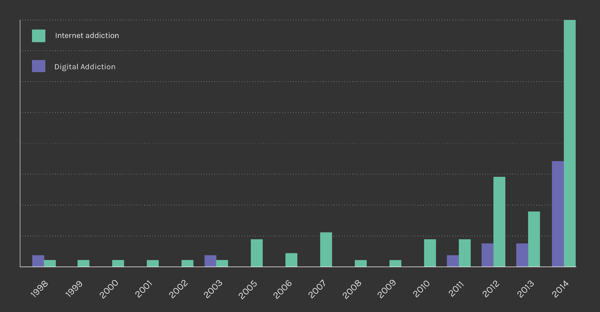
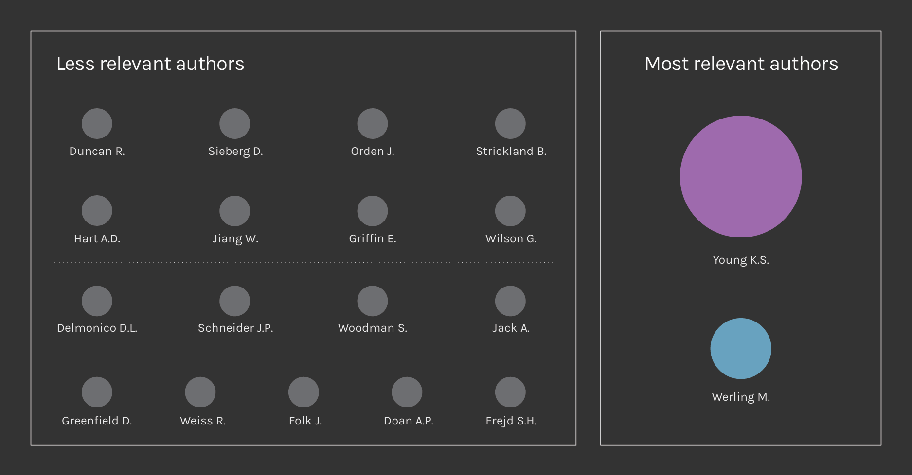

Introduction
In parallel with the Google analysis we moved ahead with analysing the Amazon results both for the query Internet Addiction and Digital Addiction, to better understand how people relates to the problem. We chose Amazon as research platform because of its kind of users, which look for specific books. We tried to map the most searched and bought ones for each query. Once put together and cleaned, the results have been sorted by year: Internet Addiction has been discussed since 1998 to 2014 and increased constantly especially in the last year, while Digital Addiction is a more recent topic, started in 2011 and grown fast. This confirms, together with the Google Trend and the Corpus analysis, that Digital Addiction is a newer keyword research (see the image below).

In the next step we tried to understand if some authors write more frequently about each topic of our queries. Any author with two or more publications has been considered and one of the most influent one found is Kimberly Young (Psychologist expert in Internet Addiction Disorder and Online Behaviour, who first found a clinic to cure the addiction) showing eight publications. The second in order of importance is Werling (an e-book publishing house focused on Internet Addiction) with four results (see the image below).
